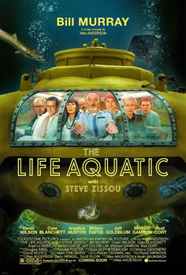

The Life Aquatic with Steve Zissou

Wes Anderson
2004
119 minutes
Wikipedia link
IMDB link
TV Tropes link
This is text.
Time to choose something different:
- It didn't seem like a good idea having that guy in charge of things, but I guess it worked out in the end! - Turn to section 20
- Piracy on the high seas really is a menace to society... - Turn to section 130
- I wonder if Wes Anderson's quirks can be traced to some seminal film that greatly influenced him! - Turn to section 44